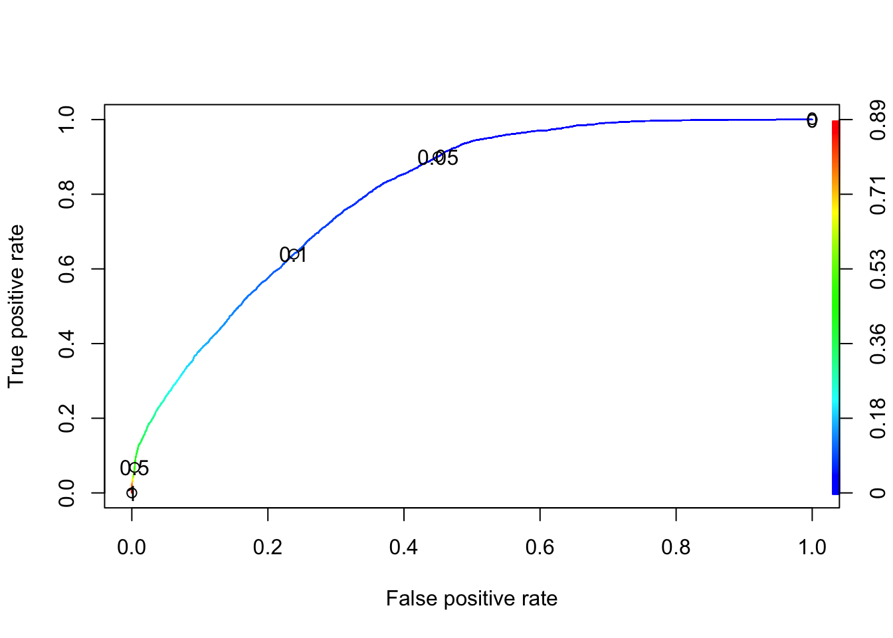

As before, in this case study, we will fit a logistic regression model. However, this time we will be concerning in using logistic regression for a classification problem. To do this, we will fit and interpret the model, but we will also use it to predict the class of a newly observed cases. Moreover, to select an appropriate threshold for classifying new cases, we will deal with the Receiver Operating Characteristic (ROC) curve.
For this problem, we will analyse data about office workers’ performance. The objective is classifying them as 1, if they deserve to be promoted, and 0, otherwise. The data set was retrieved from this page (with changes). You can download the .csv file here.
This data set contains the following variables:
gender (categorical): female (F) or male (M)no_of_courses (numeric): number of courses completed in the previous yearage (numeric)previous_year_rating (numeric): employee rating for the previous yearlength_of_service (numeric): length of service in yearsKPIs_met_greater_80 (categorical): if percent of Key Performance Indicators (KPIs) is greater than 80%, then 1; otherwise, 0awards_won (categorical): if won an award during the previous year, then 1; otherwise, 0avg_training_score (numeric): average score in current training evaluationis_promoted (categorical): recommended for promotionSince the output of a logistic model is a probability \(\theta\) that represents the conditional probability that the variable \(Y\) is equal to 1 given the value of the covariates \(\mathbf{X}\), we can use this probability to, given a threshold \(\theta_0\), classify \(\mathbf{X} = \mathbf{x}_0\) as 1, if \(\hat{\theta}(\mathbf{x}_0) > \theta_0\), and 0, otherwise.
In this sense, one important tool we will use is named Confusion Matrix. For instance, we may have
Predicted 0 |
Predicted 1 |
Total | |
|---|---|---|---|
Observed 0 |
40 | 20 | 60 |
Observed 1 |
15 | 50 | 65 |
| Total | 55 | 70 | 125 |
From the above table, we are interested in the following quantities
1 and the values were actually 1 (e.g, 50).0 and the values were actually 0 (e.g, 40).1 and the values were actually 0 (e.g, 20).0 and the values were actually 1 (e.g, 15).Also, and based on these quantities, we can determine the \(\texttt{accuracy}\)in the following way
\[ \texttt{accuracy} = \frac{\texttt{TP} + \texttt{TN}}{\texttt{total}}, \] which describes how often the classifier is correct. In our example, \(\texttt{accuracy} = 90/125 = 0.72\).
Other measures of accuracy include
1, how often the model predicts 1? (\(\texttt{TP}/(\texttt{TP} + \texttt{FN})\))0, how often the model predicts 0? (\(\texttt{TN}/(\texttt{TN} + \texttt{FP})\))In order to explore the data set and perform initial analyses, we have to read it (with R) first. Provided that the .csv file is saved within the datasets/ folder, one can read the file in the following way.
col.names <- c('gender', 'no_of_courses', 'age', 'previous_year_rating', 'length_of_service', 'KPIs_met_greater_80', 'awards_won', 'avg_training_score', 'is_promoted')
hr <- read.csv(file = 'datasets/hr.csv', header = FALSE, sep = ',', col.names = col.names)
head(hr, 5)## gender no_of_courses age previous_year_rating length_of_service
## 1 F 1 35 5 8
## 2 M 1 30 5 4
## 3 M 1 34 3 7
## 4 M 2 39 1 10
## 5 M 1 45 3 2
## KPIs_met_greater_80 awards_won avg_training_score is_promoted
## 1 1 0 49 0
## 2 0 0 60 0
## 3 0 0 50 0
## 4 0 0 50 0
## 5 0 0 73 0Now, let’s see a summary of our data.
summary(hr)## gender no_of_courses age previous_year_rating
## Length:50684 Min. : 1.000 Min. :20.00 Min. :1.000
## Class :character 1st Qu.: 1.000 1st Qu.:30.00 1st Qu.:3.000
## Mode :character Median : 1.000 Median :34.00 Median :3.000
## Mean : 1.248 Mean :35.45 Mean :3.329
## 3rd Qu.: 1.000 3rd Qu.:39.00 3rd Qu.:4.000
## Max. :10.000 Max. :60.00 Max. :5.000
## length_of_service KPIs_met_greater_80 awards_won avg_training_score
## Min. : 1.000 Min. :0.0000 Min. :0.00000 Min. :39.00
## 1st Qu.: 3.000 1st Qu.:0.0000 1st Qu.:0.00000 1st Qu.:51.00
## Median : 5.000 Median :0.0000 Median :0.00000 Median :60.00
## Mean : 6.261 Mean :0.3522 Mean :0.02316 Mean :63.39
## 3rd Qu.: 8.000 3rd Qu.:1.0000 3rd Qu.:0.00000 3rd Qu.:76.00
## Max. :37.000 Max. :1.0000 Max. :1.00000 Max. :99.00
## is_promoted
## Min. :0.00000
## 1st Qu.:0.00000
## Median :0.00000
## Mean :0.08541
## 3rd Qu.:0.00000
## Max. :1.00000However, as some variables are being interpreted as numeric, we have to convert them to factor (categorical variable) before conducting any analysis.
hr$gender <- factor(hr$gender)
hr$KPIs_met_greater_80 <- factor(hr$KPIs_met_greater_80)
hr$awards_won <- factor(hr$awards_won)
hr$is_promoted <- factor(hr$is_promoted)
summary(hr)## gender no_of_courses age previous_year_rating
## F:15154 Min. : 1.000 Min. :20.00 Min. :1.000
## M:35530 1st Qu.: 1.000 1st Qu.:30.00 1st Qu.:3.000
## Median : 1.000 Median :34.00 Median :3.000
## Mean : 1.248 Mean :35.45 Mean :3.329
## 3rd Qu.: 1.000 3rd Qu.:39.00 3rd Qu.:4.000
## Max. :10.000 Max. :60.00 Max. :5.000
## length_of_service KPIs_met_greater_80 awards_won avg_training_score
## Min. : 1.000 0:32835 0:49510 Min. :39.00
## 1st Qu.: 3.000 1:17849 1: 1174 1st Qu.:51.00
## Median : 5.000 Median :60.00
## Mean : 6.261 Mean :63.39
## 3rd Qu.: 8.000 3rd Qu.:76.00
## Max. :37.000 Max. :99.00
## is_promoted
## 0:46355
## 1: 4329
##
##
##
## Now, we can fit our model.
However, before fitting our model, we will split our data into training and testing data sets. To do this, we can use the sample.split() function from the caTools package.
library('caTools')
set.seed(1)
split <- sample.split(hr$is_promoted, SplitRatio = 0.75)
hrTraining <- subset(hr, split == TRUE)
hrTesting <- subset(hr, split == FALSE)
dim(hrTraining)## [1] 38013 9dim(hrTesting)## [1] 12671 9In this case, we will fit a model with all available variables.
model <- glm(formula = is_promoted ~ ., data = hrTraining, family = binomial(link = 'logit')) # with logit link function
summary(model)##
## Call:
## glm(formula = is_promoted ~ ., family = binomial(link = "logit"),
## data = hrTraining)
##
## Deviance Residuals:
## Min 1Q Median 3Q Max
## -1.8569 -0.4303 -0.2757 -0.1886 3.0463
##
## Coefficients:
## Estimate Std. Error z value Pr(>|z|)
## (Intercept) -6.637956 0.174657 -38.006 < 2e-16 ***
## genderM -0.089907 0.042309 -2.125 0.033586 *
## no_of_courses -0.197242 0.039195 -5.032 4.84e-07 ***
## age -0.012762 0.003497 -3.649 0.000263 ***
## previous_year_rating 0.331555 0.018941 17.505 < 2e-16 ***
## length_of_service 0.025744 0.006221 4.138 3.50e-05 ***
## KPIs_met_greater_801 1.230945 0.043735 28.146 < 2e-16 ***
## awards_won1 1.953581 0.078395 24.920 < 2e-16 ***
## avg_training_score 0.043654 0.001476 29.573 < 2e-16 ***
## ---
## Signif. codes: 0 '***' 0.001 '**' 0.01 '*' 0.05 '.' 0.1 ' ' 1
##
## (Dispersion parameter for binomial family taken to be 1)
##
## Null deviance: 22185 on 38012 degrees of freedom
## Residual deviance: 18482 on 38004 degrees of freedom
## AIC: 18500
##
## Number of Fisher Scoring iterations: 6Now, we can use our fitted model to do predictions for training data set. Our objective here is to find a reasonable value for the threshold (\(\theta_0\)).
predictTraining <- predict(model, type = 'response')
summary(predictTraining)## Min. 1st Qu. Median Mean 3rd Qu. Max.
## 0.002474 0.023561 0.048029 0.085418 0.107864 0.887217tapply(predictTraining, hrTraining$is_promoted, mean)## 0 1
## 0.07504518 0.19648269These results show that for the true is_promoted = 1 the average predicted probability is \(0.19\), while for the true is_promoted = 0 the average predicted probability is \(0.08\). In this case, we want to choose a threshold \(\theta_0\), such that the prediction error (according to the above definitions) is as small as possible.
So, let’s see the effect of different thresholds on the sensitivity and specificity of the classifier.
# threshold = 0.75
(tb1 <- table(hrTraining$is_promoted, predictTraining > 0.75))##
## FALSE TRUE
## 0 34750 16
## 1 3164 83print(paste('Sensitivity: ', round(tb1[2, 2] / (tb1[2, 2] + tb1[2, 1]), 3), sep = ''))## [1] "Sensitivity: 0.026"print(paste('Specificity: ', round(tb1[1, 1] / (tb1[1, 1] + tb1[1, 2]), 3), sep = ''))## [1] "Specificity: 1"# threshold = 0.50
(tb2 <- table(hrTraining$is_promoted, predictTraining > 0.50))##
## FALSE TRUE
## 0 34622 144
## 1 3026 221print(paste('Sensitivity: ', round(tb2[2, 2] / (tb2[2, 2] + tb2[2, 1]), 3), sep = ''))## [1] "Sensitivity: 0.068"print(paste('Specificity: ', round(tb2[1, 1] / (tb2[1, 1] + tb2[1, 2]), 3), sep = ''))## [1] "Specificity: 0.996"# threshold = 0.25
(tb3 <- table(hrTraining$is_promoted, predictTraining > 0.25))##
## FALSE TRUE
## 0 32955 1811
## 1 2390 857print(paste('Sensitivity: ', round(tb3[2, 2] / (tb3[2, 2] + tb3[2, 1]), 3), sep = ''))## [1] "Sensitivity: 0.264"print(paste('Specificity: ', round(tb3[1, 1] / (tb3[1, 1] + tb3[1, 2]), 3), sep = ''))## [1] "Specificity: 0.948"How can we interpret these results?
Actually, we can see that by increasing the threshold the sensitivity decreases while specificity increases. Alternatively, the contrary happens when we decrease the threshold.
However, instead of testing these values manually, we will plot the Receiver Operating Characteristic (ROC) curve using the prediction() and performance() functions from the ROCR package.
library('ROCR')
# First parameter is the vector of predicted probabilities, and
# second parameter is the vector of true values.
ROCRpred <- prediction(predictTraining, hrTraining$is_promoted)
# Compute the 'true positive rate' and 'false positive rate' for
# different values of threshold.
RPCRperf <- performance(ROCRpred, 'tpr', 'fpr')
plot(RPCRperf, colorize = TRUE, print.cutoffs.at = c(0, 0.05, 0.1, 0.5, 1.0))
From the above plot, notice that the sensitivity is shown in the y-axis, and 1 - specificity is shown in the x-axis. The curve always start at \((0, 0)\) and always ends at \((1, 1)\). At \((0, 0)\), we will not get any false positive points, but we will not identify people who truly deserved to be promoted. On the other hand, at the endpoint we identify all people who deserved to be promoted, but the false positive rate is \(1\). Therefore, we want something in the middle (which depends on the problem).
For a threshold of \(0.1\) (meaning that I expect to promote approximately 60% of people who deserve it, and I am willing to promote 20% of people who do not deserve it), I have the following results for the testing data set.
predictTesting <- predict(model, type = 'response', newdata = hrTesting)
(tb <- table(hrTesting$is_promoted, predictTesting >= 0.1))##
## FALSE TRUE
## 0 8855 2734
## 1 376 706print(paste('Accuracy: ', round((sum(tb[, 1]) /sum(tb)), 3), sep = ''))## [1] "Accuracy: 0.729"print(paste('Sensitivity: ', round(tb[2, 2] / (tb[2, 2] + tb[2, 1]), 3), sep = ''))## [1] "Sensitivity: 0.652"print(paste('Specificity: ', round(tb[1, 1] / (tb[1, 1] + tb[1, 2]), 3), sep = ''))## [1] "Specificity: 0.764"